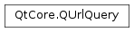
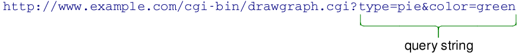

QUrlQuery¶
Note
This class was introduced in Qt 5.0.
Synopsis¶
Functions¶
- def
__eq__(other) - def
__ne__(other) - def
addQueryItem(key, value) - def
allQueryItemValues(key[, encoding=QUrl.PrettyDecoded]) - def
clear() - def
hasQueryItem(key) - def
isEmpty() - def
query([encoding=QUrl.PrettyDecoded]) - def
queryItemValue(key[, encoding=QUrl.PrettyDecoded]) - def
queryItems([encoding=QUrl.PrettyDecoded]) - def
queryPairDelimiter() - def
queryValueDelimiter() - def
removeAllQueryItems(key) - def
removeQueryItem(key) - def
setQuery(queryString) - def
setQueryDelimiters(valueDelimiter, pairDelimiter) - def
setQueryItems(query) - def
swap(other) - def
toString([encoding=QUrl.PrettyDecoded])
Static functions¶
- def
defaultQueryPairDelimiter() - def
defaultQueryValueDelimiter()
Detailed Description¶
The
PySide2.QtCore.QUrlQueryclass provides a way to manipulate a key-value pairs in a URL’s query.It is used to parse the query strings found in URLs like the following:
Query strings like the above are used to transmit options in the URL and are usually decoded into multiple key-value pairs. The one above would contain two entries in its list, with keys “type” and “color”.
PySide2.QtCore.QUrlQuerycan also be used to create a query string suitable for use inQUrl.setQuery()from the individual components of the query.The most common way of parsing a query string is to initialize it in the constructor by passing it the query string. Otherwise, the
PySide2.QtCore.QUrlQuery.setQuery()method can be used to set the query to be parsed. That method can also be used to parse a query with non-standard delimiters, after having set them using thePySide2.QtCore.QUrlQuery.setQueryDelimiters()function.The encoded query string can be obtained again using
PySide2.QtCore.QUrlQuery.query(). This will take all the internally-stored items and encode the string using the delimiters.
Encoding¶
All of the getter methods inPySide2.QtCore.QUrlQuerysupport an optional parameter of typeQUrl.ComponentFormattingOptions, includingPySide2.QtCore.QUrlQuery.query(), which dictate how to encode the data in question. Except forQUrl.FullyDecoded, the returned value must still be considered a percent-encoded string, as there are certain values which cannot be expressed in decoded form (like control characters, byte sequences not decodable to UTF-8). For that reason, the percent character is always represented by the string “%25”.
Handling of spaces and plus (“+”)¶
Web browsers usually encode spaces found in HTML FORM elements to a plus sign (“+”) and plus signs to its percent-encoded form (%2B). However, the Internet specifications governing URLs do not consider spaces and the plus character equivalent.
For that reason,
PySide2.QtCore.QUrlQuerynever encodes the space character to “+” and will never decode “+” to a space character. Instead, space characters will be rendered “%20” in encoded form.To support encoding like that of HTML forms,
PySide2.QtCore.QUrlQueryalso never decodes the “%2B” sequence to a plus sign nor encode a plus sign. In fact, any “%2B” or “+” sequences found in the keys, values, or query string are left exactly like written (except for the uppercasing of “%2b” to “%2B”).
Full decoding¶
With
QUrl.FullyDecodedformatting, all percent-encoded sequences will be decoded fully and the ‘%’ character is used to represent itself.QUrl.FullyDecodedshould be used with care, since it may cause data loss. See the documentation ofQUrl.FullyDecodedfor information on what data may be lost.This formatting mode should be used only when dealing with text presented to the user in contexts where percent-encoding is not desired. Note that
PySide2.QtCore.QUrlQuerysetters and query methods do not support the counterpartQUrl.DecodedModeparsing, so usingQUrl.FullyDecodedto obtain a listing of keys may result in keys not found in the object.
Non-standard delimiters¶
By default,
PySide2.QtCore.QUrlQueryuses an equal sign (“=”) to separate a key from its value, and an ampersand (“&”) to separate key-value pairs from each other. It is possible to change the delimiters thatPySide2.QtCore.QUrlQueryuses for parsing and for reconstructing the query by callingPySide2.QtCore.QUrlQuery.setQueryDelimiters().Non-standard delimiters should be chosen from among what RFC 3986 calls “sub-delimiters”. They are:
sub-delims = "!" / "$" / "&" / "'" / "(" / ")" / "*" / "+" / "," / ";" / "="Use of other characters is not supported and may result in unexpected behaviour.
PySide2.QtCore.QUrlQuerydoes not verify that you passed a valid delimiter.See also
-
class
PySide2.QtCore.QUrlQuery¶ -
class
PySide2.QtCore.QUrlQuery(queryString) -
class
PySide2.QtCore.QUrlQuery(url) -
class
PySide2.QtCore.QUrlQuery(other) Parameters: - queryString – unicode
- other –
PySide2.QtCore.QUrlQuery - url –
PySide2.QtCore.QUrl
Constructs an empty
PySide2.QtCore.QUrlQueryobject. A query can be set afterwards by callingPySide2.QtCore.QUrlQuery.setQuery()or items can be added by usingPySide2.QtCore.QUrlQuery.addQueryItem().Constructs a
PySide2.QtCore.QUrlQueryobject and parses thequeryStringquery string, using the default query delimiters. To parse a query string using other delimiters, you should first set them usingPySide2.QtCore.QUrlQuery.setQueryDelimiters()and then set the query withPySide2.QtCore.QUrlQuery.setQuery().Constructs a
PySide2.QtCore.QUrlQueryobject and parses the query string found in theurlURL, using the default query delimiters. To parse a query string using other delimiters, you should first set them usingPySide2.QtCore.QUrlQuery.setQueryDelimiters()and then set the query withPySide2.QtCore.QUrlQuery.setQuery().See also
Copies the contents of the
otherPySide2.QtCore.QUrlQueryobject, including the query delimiters.
-
PySide2.QtCore.QUrlQuery.addQueryItem(key, value)¶ Parameters: - key – unicode
- value – unicode
Appends the pair
key=valueto the end of the query string of the URL. This method does not overwrite existing items that might exist with the same key.Note
This method does not treat spaces (ASCII 0x20) and plus (“+”) signs as the same, like HTML forms do. If you need spaces to be represented as plus signs, use actual plus signs.
-
PySide2.QtCore.QUrlQuery.allQueryItemValues(key[, encoding=QUrl.PrettyDecoded])¶ Parameters: - key – unicode
- encoding –
PySide2.QtCore.QUrl.ComponentFormattingOptions
Return type: list of strings
Returns the a list of query string values whose key is equal to
keyfrom the URL, using the options specified inencodingto encode the return value. If the keykeyis not found, this function returns an empty list.
-
PySide2.QtCore.QUrlQuery.clear()¶ Clears this
PySide2.QtCore.QUrlQueryobject by removing all of the key-value pairs currently stored. If the query delimiters have been changed, this function will leave them with their changed values.
-
static
PySide2.QtCore.QUrlQuery.defaultQueryPairDelimiter()¶ Return type: PySide2.QtCore.QCharReturns the default character for separating keys-value pairs from each other, an ampersand (“&”).
-
static
PySide2.QtCore.QUrlQuery.defaultQueryValueDelimiter()¶ Return type: PySide2.QtCore.QCharReturns the default character for separating keys from values in the query, an equal sign (“=”).
-
PySide2.QtCore.QUrlQuery.hasQueryItem(key)¶ Parameters: key – unicode Return type: PySide2.QtCore.boolReturns
trueif there is a query string pair whose key is equal tokeyfrom the URL.
-
PySide2.QtCore.QUrlQuery.isEmpty()¶ Return type: PySide2.QtCore.boolReturns
trueif thisPySide2.QtCore.QUrlQueryobject contains no key-value pairs, such as after being default-constructed or after parsing an empty query string.
-
PySide2.QtCore.QUrlQuery.__ne__(other)¶ Parameters: other – PySide2.QtCore.QUrlQueryReturn type: PySide2.QtCore.boolReturns
trueifotheris not equal to thisPySide2.QtCore.QUrlQuery. Otherwise, returnsfalse.See also
PySide2.QtCore.QUrlQuery.operator==()
-
PySide2.QtCore.QUrlQuery.__eq__(other)¶ Parameters: other – PySide2.QtCore.QUrlQueryReturn type: PySide2.QtCore.boolReturns
trueif this object and theotherobject contain the same contents, in the same order, and use the same query delimiters.
-
PySide2.QtCore.QUrlQuery.query([encoding=QUrl.PrettyDecoded])¶ Parameters: encoding – PySide2.QtCore.QUrl.ComponentFormattingOptionsReturn type: unicode Returns the reconstructed query string, formed from the key-value pairs currently stored in this
PySide2.QtCore.QUrlQueryobject and separated by the query delimiters chosen for this object. The keys and values are encoded using the options given by theencodingparameter.For this function, the only ambiguous delimiter is the hash (“#”), as in URLs it is used to separate the query string from the fragment that may follow.
The order of the key-value pairs in the returned string is exactly the same as in the original query.
See also
PySide2.QtCore.QUrlQuery.setQuery()QUrl.setQuery()QUrl.fragment()Encoding
-
PySide2.QtCore.QUrlQuery.queryItemValue(key[, encoding=QUrl.PrettyDecoded])¶ Parameters: - key – unicode
- encoding –
PySide2.QtCore.QUrl.ComponentFormattingOptions
Return type: unicode
Returns the query value associated with key
keyfrom the URL, using the options specified inencodingto encode the return value. If the keykeyis not found, this function returns an empty string. If you need to distinguish between an empty value and a non-existent key, you should check for the key’s presence first usingPySide2.QtCore.QUrlQuery.hasQueryItem().If the key
keyis multiply defined, this function will return the first one found, in the order they were present in the query string or added usingPySide2.QtCore.QUrlQuery.addQueryItem().
-
PySide2.QtCore.QUrlQuery.queryItems([encoding=QUrl.PrettyDecoded])¶ Parameters: encoding – PySide2.QtCore.QUrl.ComponentFormattingOptionsReturn type: Returns the query string of the URL, as a map of keys and values, using the options specified in
encodingto encode the items. The order of the elements is the same as the one found in the query string or set withPySide2.QtCore.QUrlQuery.setQueryItems().See also
-
PySide2.QtCore.QUrlQuery.queryPairDelimiter()¶ Return type: PySide2.QtCore.QCharReturns the character used to delimit between keys-value pairs when reconstructing the query string in
PySide2.QtCore.QUrlQuery.query()or when parsing inPySide2.QtCore.QUrlQuery.setQuery().
-
PySide2.QtCore.QUrlQuery.queryValueDelimiter()¶ Return type: PySide2.QtCore.QCharReturns the character used to delimit between keys and values when reconstructing the query string in
PySide2.QtCore.QUrlQuery.query()or when parsing inPySide2.QtCore.QUrlQuery.setQuery().
-
PySide2.QtCore.QUrlQuery.removeAllQueryItems(key)¶ Parameters: key – unicode Removes all the query string pairs whose key is equal to
keyfrom the URL.
-
PySide2.QtCore.QUrlQuery.removeQueryItem(key)¶ Parameters: key – unicode Removes the query string pair whose key is equal to
keyfrom the URL. If there are multiple items with a key equal tokey, it removes the first item in the order they were present in the query string or added withPySide2.QtCore.QUrlQuery.addQueryItem().
-
PySide2.QtCore.QUrlQuery.setQuery(queryString)¶ Parameters: queryString – unicode Parses the query string in
queryStringand sets the internal items to the values found there. If any delimiters have been specified withPySide2.QtCore.QUrlQuery.setQueryDelimiters(), this function will use them instead of the default delimiters to parse the string.See also
-
PySide2.QtCore.QUrlQuery.setQueryDelimiters(valueDelimiter, pairDelimiter)¶ Parameters: - valueDelimiter –
PySide2.QtCore.QChar - pairDelimiter –
PySide2.QtCore.QChar
Sets the characters used for delimiting between keys and values, and between key-value pairs in the URL’s query string. The default value delimiter is ‘=’ and the default pair delimiter is ‘&’.
valueDelimiterwill be used for separating keys from values, andpairDelimiterwill be used to separate key-value pairs. Any occurrences of these delimiting characters in the encoded representation of the keys and values of the query string are percent encoded when returned inPySide2.QtCore.QUrlQuery.query().If
valueDelimiteris set to ‘(‘ andpairDelimiteris ‘)’, the above query string would instead be represented like this:http://www.example.com/cgi-bin/drawgraph.cgi?type-pie/color-green
Note
Non-standard delimiters should be chosen from among what RFC 3986 calls “sub-delimiters”. They are:
sub-delims = "!" / "$" / "&" / "'" / "(" / ")" / "*" / "+" / "," / ";" / "="
Use of other characters is not supported and may result in unexpected behaviour. This method does not verify that you passed a valid delimiter.
- valueDelimiter –
-
PySide2.QtCore.QUrlQuery.setQueryItems(query)¶ Parameters: query – Sets the items in this
PySide2.QtCore.QUrlQueryobject toquery. The order of the elements inqueryis preserved.Note
This method does not treat spaces (ASCII 0x20) and plus (“+”) signs as the same, like HTML forms do. If you need spaces to be represented as plus signs, use actual plus signs.
-
PySide2.QtCore.QUrlQuery.swap(other)¶ Parameters: other – PySide2.QtCore.QUrlQuerySwaps this URL query instance with
other. This function is very fast and never fails.
-
PySide2.QtCore.QUrlQuery.toString([encoding=QUrl.PrettyDecoded])¶ Parameters: encoding – PySide2.QtCore.QUrl.ComponentFormattingOptionsReturn type: unicode Returns this
PySide2.QtCore.QUrlQueryas aPySide2.QtCore.QString.encodingcan be used to specify the URL string encoding of the return value.
© 2018 The Qt Company Ltd. Documentation contributions included herein are the copyrights of their respective owners. The documentation provided herein is licensed under the terms of the GNU Free Documentation License version 1.3 as published by the Free Software Foundation. Qt and respective logos are trademarks of The Qt Company Ltd. in Finland and/or other countries worldwide. All other trademarks are property of their respective owners.